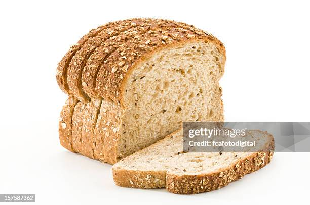

Home
Bread

This is an image of a bread of loaf and a few slices, the following recipe will instruct you in how to make your own.
Ingredients
- whole wheat flour 600g
- filtered water 400g
- active dry yeast 10g
- salt 10g
Preparation
Place the dry ingredients into bowl or a standmixer bowl, mix them together with a utensil then add the water
knead the dough either by hand or using a standmixer's dough hook attachment.
when the dough has formed, cover the bowl with some wrap and then place in a warm place for 50 minutes to let it proof
after this place it into a bread pan and let it proof again for another 50 minutes.
Place in the oven at 400 degrees for 1 hour.